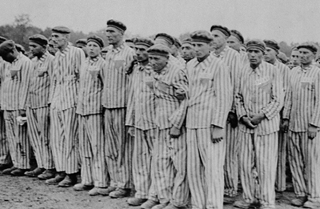
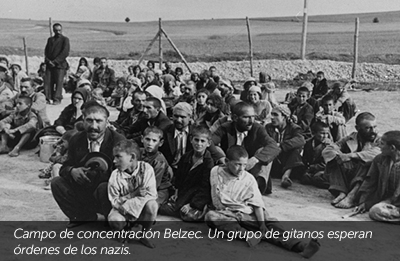

Volver a Vivir
OTROS GENOCIDIOS
¿Qué es un genocidio?
Según la Convención para la Prevención y Sanción del Delito de Genocidio de 1948: Cualquier acto perpetrado con la intención de destruir, total o parcialmente, a un grupo nacional, étnico, racial o religioso.
¿Qué genocidios existieron?
En los últimos 150 años, decenas de millones de hombres, mujeres y niños han perdido sus vidas en genocidios. Millones fueron torturados, violados y obligados a abandonar sus hogares.
Conocer y estudiar estos episodios tan terribles nos hace comprender cuáles son las consecuencias de dejar ocurrir un genocidio y la relevancia de hacer algo para prevenirlos. Aprender de la historia es el primer paso que podemos dar para luchar contra los genocidios y lograr que algo así no vuelva a ocurrir en ningún lugar del mundo.
Además del Holocausto, la comunidad internacional reconoce los siguientes genocidios:
Genocidio Armenio (1915-1918)
A comienzos de 1915, mientras Europa estaba concentrada en la Primera Guerra Mundial, la población armenia, una minoría cristiana que vivía en el Imperio Otomano fue perseguida, asesinada y casi exterminada bajo órdenes del gobierno. Los otomanos utilizaron formas de matar brutales y despiadadas: sitiando y prendiendo fuego pueblos enteros, hundiendo botes llenos de gente, contagiando adrede a niños de enfermedades mortales, en marchas de la muerte, etc. Entre las deportaciones, ejecuciones y epidemias en los campos de concentración, se estima que fueron asesinadas más de 1 millón de personas.
Camboya (1975-1979)
Cuando el KHMER ROUGE tomó control del gobierno de camboya en 1975, declararon la instauración de una nueva era dedicada a una sociedad campesina. Ilegalizaron la educación, la religión, la salud y la tecnología, y obligaron la evacuación de las ciudades. La gente fue forzada a instalarse en el campo y trabajar en pésimas condiciones de vida. Aquellos que no toleraban el ritmo de trabajo eran asesinados. Al mismo tiempo, el régimen perseguía a sus “enemigos” ya fuera política, religiosa o culturalmente. En 4 años, entre 1.7 y 2 millones de personas fueron asesinadas en los campos de muerte del régimen.

Rwanda (1994)
A comienzos de 1915, mientras Europa estaba concentrada en la Primera Guerra Mundial, la población armenia, una minoría cristiana que vivía en el Imperio Otomano fue perseguida, asesinada y casi exterminada bajo órdenes del gobierno. Los otomanos utilizaron formas de matar brutales y despiadadas: sitiando y prendiendo fuego pueblos enteros, hundiendo botes llenos de gente, contagiando adrede a niños de enfermedades mortales, en marchas de la muerte, etc. Entre las deportaciones, ejecuciones y epidemias en los campos de concentración, se estima que fueron asesinadas más de 1 millón de personas.

Bosnia Herzegovina (1995)
Con la caída de la Unión Soviética a comienzos de 1990, Yugoslavia comenzó a dividirse en repúblicas, lo que llevó a fuertes enfrentamientos étnicos y desplazamientos de población.
En 1992, Bosnia y Herzegovina declaró su independencia y la región rápidamente se convirtió en zona de batalla entre serbios, croatas y bosnios, todos quienes habitaban Bosnia y querían o bien tomar el control del gobierno o evitar que otros grupos lo hicieran.
Todos cometieron terribles abusos con la población civil, utilizando violaciones, tortura, ejecuciones y decapitaciones públicas para asesinar. Las unidades serbias fueron las más crueles y llevaron atrocidades, incluyendo la masacre de Srebrenica, en la cual el General Radko Mladic asesinó más de 8.000 bosnios musulmanes con el objetivo de realizar una limpieza étnica de la zona.
En 1993 la ONU creó el Tribunal Penal Internacional de Yugoslavia para juzgar a los perpetradores de las masacres. La paz finalmente llegó en 1995, pero se estima que más de 96.000 personas fueron asesinadas durante el conflicto.
Darfur (2003)
El genocidio de Darfur, una región de Sudán Occidental donde viven 6 millones de personas, comenzó en 2003 y continúa hasta el día de hoy.
Luego de que Sudán se independizó del Imperio Británico en 1956, el país se vio sumergido en largas guerras civiles, motivadas en gran medida por la lucha por recursos. El gobierno prestó especial atención a Darfur, donde en la década de 1980 se descubrió petróleo.
Las tensiones y violencia escalaron rápidamente, hasta que en 2003, miembros de tribus árabes (los Janjaweed), apoyados por el Gobierno sudanés, comenzaron a atacar sistemáticamente aldeas no árabes en Darfur, con el objetivo de eliminar la población de la región y crear un estado árabe. Los ataques a las aldeas comienzan con bombardeos de la fuerza aérea sudanesa, y son seguidos por incursiones de las milicias Janjaweed. Todos los habitantes son asesinados o forzados a huir. Las aldeas son saqueadas e incendiadas, las mujeres y niñas violadas o esclavizadas.
La ONU envió varias misiones de paz a Darfur sin ningún éxito. En 2009, la Corte Internacional de Justicia emitió una orden de arresto para el Presidente Sudanés Omar Bashir por crímenes contra la humanidad y cargos por genocidio. El gobierno de Sudán ha hecho oídos sordos y la violencia continúa.
Según la ONU, más de 2.7 millones de personas han sido desplazadas de sus hogares y más de 350.000 se han refugiado en países vecinos. Más de 400.000 personas han sido asesinadas y se estima que mueren más de 5.000 por mes. El gobierno sudanés niega cualquier tipo de responsabilidad en estas muertes.
¿Cómo prevenir futuros genocidios?
La historia no tiene por qué repetirse. Las sociedades deben actuar para impedir que este tipo de atrocidades sigan sucediendo en el mundo. Aunque muchas veces las decisiones de los líderes políticos no reflejan la voluntad de las poblaciones, existen varias cosas que nosotros como ciudadanos podemos hacer para aportar nuestro grano de arena en la prevención de los genocidios.
- Exigir a nuestros gobernantes: Prevención genocidios requiere en primer lugar de voluntad política. Tenemos que hacer escuchar nuestra voz y exigir a nuestros gobiernos que tomen las decisiones necesarias para prevenir y terminar con las atrocidades que ocurren en el mundo.
- Detener a los facilitadores: Los perpetradores de genocidios y atrocidades masivas no pueden tener éxito sin el apoyo de otros gobiernos y empresas. Podemos difamar públicamente a estas empresas y exigirles que paren de financiar a grupos genocidas. Hoy en día, la tecnología nos permite realizar este tipo de acciones desde cualquier parte del mundo mediante internet y las redes sociales.
- Hacer que los derechos humanos y la prevención de genocidio sean parte de la política de nuestro país: el hecho de que no veamos al genocidio como algo cercano a nosotros porque no forma parte de nuestra realidad, no significa que no sea una realidad para millones de personas.